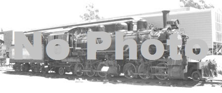

Last updated: 20 June, 2015
| Builder: | Berliner Maschinenbau, Actien Gesellschaft (Germany) (BMAG) |
| Build #: | 8778 |
| Date: | 1926 |
| Engine #: | 5A |
| Railroad: | Ferrocarril Nales, SA (FNC) |
| Website: | |
| Email: | |
| Location 1: | Bearsview Express Steam RR, Gales Creek, OR |
| GPS: | |
| Phone: | |
| Status: | Operational |
| Notes: | Nothing found concerning this locomotion's location but there are references that say it may be under restoration at Sumpter Valley Railroad, or at least they were involved with it's move.1 2 |
| Class: | |
| Gauge: | 36" |
| F.M.Whyte: | 0-4-0T |
| Drivers: | 36 |
| Gear Ratio: | |
| Tractive Effort: | 9,220 |
| Weight: | 32,000 |
| Weight on Drivers: | 32,000 |
| Length: | |
| Boiler: | |
| Cylinders: | 12x16 |
| Top Speed: | |
| Fuel: | |
| Fuel Type: | Coal |
| Water: | |
| Steam psi: | 170 |